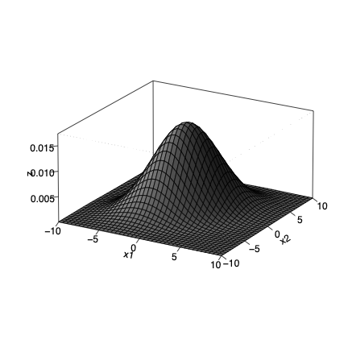

Central to matrix operations is the matrix inverse, which is somewhat analogous to reciprocals in arithmetic.
This is a fundamental operation in linear algebra (though ironically, related quantities are often used instead of using the inverse directly).
To motivate our discussion of matrix inverse, we first revisit the topic of Markov chains.
3.1 A Further Look at Markov Chains
Suppose \(X_0\), our state at time 0, is random. Let \(f\) denote its distribution, i.e. its list of probabilities: \(f_i = P(X_0 = i)\), i = 1,…,k, where k is the number of states in the chain. What about \(X_1\), the state at time 1? Let’s find an expression for \(g\), the distribution of \(X_1\).
so we have the nice compact relation for the distribution of \(X_1\) in terms of the distribution of \(X_0\).
\[
g' = f'P
\]
And setting \(h\) to the distribution of \(X_2\), the same reasoning gives us
\[
h' = g'P
\]
Note that we used the Markov property, “memorylessness.” Once we reach time 1, “time starts over,” regradless of the previous history, i.e. regardless of where we were at time 0.
Let \(d_i\) denote the distribution of \(X_i\). Generalizing the above reasoning gives us
\[
d_j' = d_{j-1}' P
\]
For convenience, let’s take transposes (recall that \((AB)' =
B'A'\)):
\[
d_j = P' d_{j-1}
\tag{3.1}\]
Now suppose our chain has a long-run distribution \(\nu\), as in {Section 2.6}, so that
Since P is known, this provides us with a way to compute \(\nu\). All we need to do is solve Equation 3.2. Well, how do we do that? It turns out that use of matrix inverses will solve our problem.
3.2 Definition
For any square matrix \(A\), its inverse\(B\) (if it exists) is a square matrix of the same size such that
\[
AB = BA = I
\]
where \(I\) is the identity matrix of that size.
As hinted, many matrices do not have inverses. For instance, if \(A\) consists of all 0s, there is no way to get \(I\) for \(AB\).
In very rough terms, it sometimes helps the intuition to think of an inverse as the “reciprocal” of the matrix.
We will often speak of the inverse of \(A\). In fact, if \(A\) is invertible, its inverse is unique.
3.3 Example: Computing Long-Run Markov Distribution
Now let us return to Equation 2.1, which expresses the vector of long-run state probabilities for a Markov chain with transition matrix P and stationary distribution \(\nu\), How can we use matrix inverses to solve this equation?
\[
\nu = P' \nu
\tag{3.3}\]
Rewrite it using the identity matrix:
\[
(I - P') \nu = 0
\]
For the random walk chain in Chapter 1, we had
In that particular model, P’ = P, but for most chains this is not the case.
This is high school math, and we could solve the equations that way. But this is literally what linear algebra was invented for, solving systems of equations! We will use matrix inverse.
But first, we have a problem to solve: The only solution to the above system is with all \(\nu_i = 0\). We need an equation involving a nonzero quantity.
But we do have such an equation. The vector \(\nu\) is a stationary distribution for a Markov chain, i.e. the set of long-run probabilities, and thus it must sum to 1.0. Let’s replace the last row by that relation:
nu <- Ginv %*%c(0,0,0,0,1) # recall that q = c(0,0,0,0,1)nu
[,1]
[1,] 0.2
[2,] 0.2
[3,] 0.2
[4,] 0.2
[5,] 0.2
This confirms our earlier speculation in Section 2.6 based on powers of \(P\).
3.4 Matrix Algebra
Several properties to note:
If the inverses of \(A\) and \(B\) exist, and \(A\) and \(B\) are conformable, then \((AB)^{-1}\) exists and is equal to \(B^{-1} A^{-1}\).
Proof: Consider the product \((AB) (B^{-1} A^{-1})\). The $B factors give us \(I\), leaving \(A A^{-1}\), which too is \(I\).
\((A')^{-1}\) exists and is equal to \((A^{-1})'\).
Proof: Follows immediately from \(A A^{-1} = I\).
If \(A\) is invertible and symmetric, then \((A^{-1})'\) is also symmetric.
Proof: For convenience, let \(B\) denote \(A^{-1}\). Then
\[
AB = I
\]
Recalling from Section 2.9.2 that the transpose of a product is the reverse product of the transposes, we have
\[
I = I' = (AB)' = B'A'
\]
But since \(A' = A\), we have
\[
I = B' A
\]
In other words, not only is \(B\) the inverse of \(A\), \(B'\) is too! So, \(B = B'\).
3.5 Computation of the Matrix Inverse
Finding the inverse of a large matrix – in data science applications, the number of rows and columns \(n\) can easily be hundreds or more – can be computationally challenging. The run time is proportional to \(n^3\), and roundoff error can be an issue. Sophisticated algorithms have been developed, such as QR and Choleski decompositions. So in R, we should use, say, qr.solve rather than solve if we are working with sizable matrices.
The classic “pencil and paper” method for matrix inversion is instructive, and will be presented here.
3.5.1 Pencil-and-paper computation
The basic idea follows the pattern the reader learned for solving systems of linear equations, but with the added twist of involving some matrix multiplication.
Now, how does that give use \(A^{-1}\)? The method your were taught probably set up the partioned matrix \((A,I)\). The row operations that transformed \(A\) to \(I\) also transformed \(I\) to \(A^{-1}\). Here’s why:
As noted, the row operations are such that
\[
E_4 E_3 E_2 E_1 A
\]
give us the final transformed result, i.e. the matrix \(I\):
\[
(E_4 E_3 E_2 E_1) A = I
\]
Aha! We have found the inverse of \(A\)–it’s \(E_4 E_3 E_2 E_1\).
Note too that
Recall that the inverse of a product (if it exists is the reverse product of the inverses.
\[
A = (E_4 E_3 E_2 E_1)^{-1} I = E_4^{-1} E_3^{-1} E_2^{-1} E_1^{-1}
\]
So apparently the inverses of the elementary matrices \(E_i\) also exist, and in fact we can obtain them easily:
Each \(E_i^{-1}\) simply “undoes” its partner. \(E_1\), for instance, multiplies the row 1, column 1 element by 1/4, which is “undone” by multiplying that element by 4,
This cannot lead to \(i\), indicating that \(A^{-1}\) does not exist, and the matrix is said to be singular. And it’s no coincidence that row 2 of \(A\) is double row 1. This has many implications, as will be seen in our chapter on vector spaces.
3.7 Determinants
This is a topic that is quite straightforward and traditional, even old-fashioned–in fact, too old-fashioned, according to mathematician Sheldon Axler. The theme of his book, Linear Algebra Done Right, is that determinants are overemphasized. He relegates the topic to the very end of the book. Yet determinants do appear often in applied linear algebra settings. Moreover, they will be convenient to use in explaing very concepts in this book on linear algebra in Data Science.
But why place the topic in this particular chapter? The answer lies in the fact that earlier in this chapter we had the proviso “If \((A'A)^{-1}\) exists.” The following property of determinants is then relevant:
A square matrix \(G\) is invertible if and only if \(det(G) \neq 0\).
There are better ways to ascertain invertibility than this, but it is conceptually helpful. Determinants play a similar role in the topic of eigenvectors in Chapter 5.
3.7.1 Definition
The standard definition is one of the ugliest, in all of mathematics. Instead we will define the term using one of the methods for calculating determinants.
Consider an \(r \textrm{ x } r\) matrix \(G\). For \(r = 2\), write \(G\) as
\[
G =
\left (
\begin{array}{rr}
a & b \\
c & d \\
\end{array}
\right )
\]
and define \(\det(G)\) to be \(ad -bc\). For \(r > 2\), define submatrices as follows.
\(G_i\) is the \((r-1) \textrm{ x } (r-1)\) submatrix obtained by removing row 1 and column \(j\) from \(G\). Then \(\det(G)\) is defined recursively as
\[
\sum_{i=1}^r (-1)^{i+1} \det(G_i)
\]
Actually, we can alternatively remove row \(i\) instead of row 1. If \(i\) is an odd number, the same recursive formula holds, but for even \(i\), replace \((-1)^{i+1}\) by \((-1)^i\).
Using the same approach as in the last computation, we would find that the determinant of a general \(3 \textrm{ x } 3\) matrix
\[
\left (
\begin{array}{rrr}
a & b & c \\
d & e & f \\
g & h & i \\
\end{array}
\right )
\]
is
\[
aei + bfg + cdh - afh - bdi - ceg
\]
Each term here is involves a product of 3 of the elements of the matrix. In general, the determinant involves sums and differences of permuted products of distinct elements of the matrix, as we see above. The formation of the terms in general, and the determination of + and - signs, is done in complex but precise manner that we will not present here. But the reader should at least keep in mind that each term is a product of \(n\) elements of the matrix, a fact that will be relevant in the sequel.
3.7.2 Properties
We state these without proof:
\(G^{-1}\) exists if and only if \(\det(G) \neq 0\)
\(\det(GH) = \det(G) \det(H)\)
3.8 The Multivariate Normal Distribution Family
The familiar “bell-shaped curve” refers to the normal (or Gaussian) family, whose densities have the form
The values of \(\mu\) and \(\sigma\) are the mean and standard deviation. But what if we have a random vector, say of length \(k\)? Is there a generalized normal family?
3.8.1 Example: k = 2
The answer is yes. Here is an example for \(k = 2\):

3D bell density
3.8.2 General form
Well, then, what is the form of the \(k\)-dimensional density function? Just as the univariate normal family is parameterized by mean and variance, the multivariate one is parameterized via its mean vector \(\mu\) and a covariance matrix\(\Sigma\), a term we will define in a later chapter. The specific form is
Instead of \(1/\sigma^2\), i.e. instead of dividing by variance, we “divide by \(\Sigma\),” intuitively viewing matrix inverse as a “reciprocal” of a matrix.
In other words, covariance matrices operate roughly like generalized variances.
Instead of squaring the scalar \(t - \mu\), we “square” it in the vector case by peforming a \(w'w\) operation, albeit with \(\Sigma^{-1}\) in the middle.
Clearly, we should not stretch these analogies very far, but they do help our intuition here.